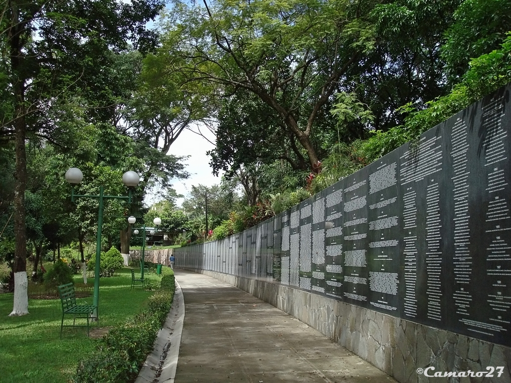

Historia
El Parque Cuscatlán es uno de los espacios verdes más importantes y emblemáticos de San Salvador. Fue inaugurado en la década de 1970 y desde entonces ha sido un punto de encuentro para familias, turistas y eventos culturales. Su nombre "Cuscatlán" proviene del idioma náhuat y significa "Lugar de las Joyas" o "Tierra de los Cuscates", en honor a los antiguos habitantes de la región.
Ubicación
Se encuentra en el centro de San Salvador, entre la Alameda Juan Pablo II y la Avenida Cuscatlán, lo que lo hace de fácil acceso desde cualquier punto de la ciudad. Es un parque urbano que combina áreas recreativas, monumentos y espacios naturales.
¿Por qué es famoso?
- Espacio recreativo: Ofrece áreas verdes, zonas de picnic, senderos y canchas deportivas.
- Monumentos y cultura: Cuenta con esculturas, memoriales y eventos culturales que reflejan la historia de El Salvador.
- Ubicación céntrica: Ideal para paseos urbanos y actividades familiares.
Qué hacer en el Parque Cuscatlán
- Paseos y caminatas: Disfrutar de senderos arbolados y áreas verdes.
- Eventos culturales: Participar en ferias, conciertos y exposiciones temporales.
- Picnic: Relajarse en las áreas designadas con familiares o amigos.
- Fotografía: Capturar monumentos, esculturas y paisajes del parque.
Cómo llegar
En vehículo privado:
- Desde cualquier punto de San Salvador, dirígete hacia la Alameda Juan Pablo II y sigue las señales hacia el parque.
En transporte público:
- Varias rutas de buses urbanos pasan cerca del parque, permitiendo un fácil acceso desde distintas zonas de la ciudad.
Galería

